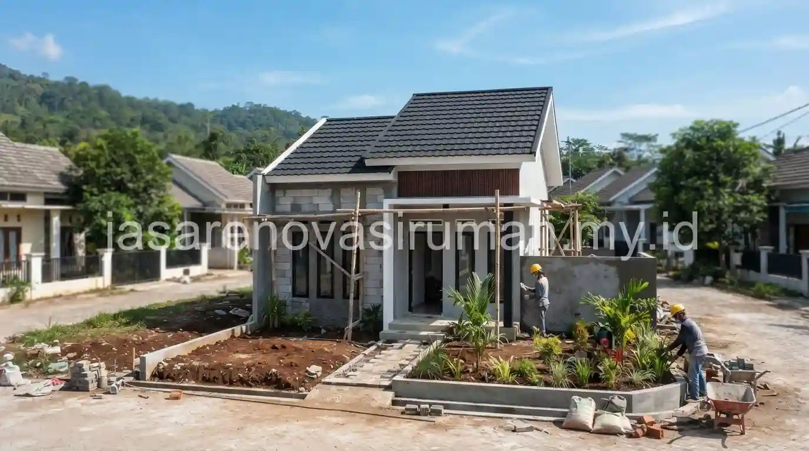
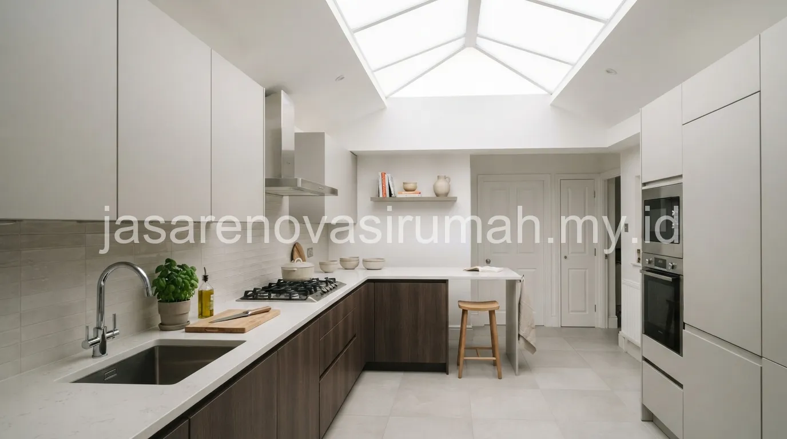

Jasa renovasi rumah subsidi Malang untuk kawasan seperti Pakis umumnya berfokus pada penutupan sisa lahan belakang yang masih kosong, diubah menjadi dapur tertutup minimalis dengan skylight fiberglass sebagai sumber cahaya alami tambahan tanpa perlu banyak bukaan jendela. Rumah subsidi memiliki keterbatasan luas lahan sejak awal, sehingga setiap meter persegi sisa tanah belakang perlu dimanfaatkan secara maksimal agar kebutuhan ruang keluarga yang berkembang tetap terpenuhi tanpa mengorbankan sirkulasi udara.
Bagaimana Cara Menutup Sisa Tanah Belakang Rumah Subsidi di Kawasan Pakis?
Cara paling umum menutup sisa lahan belakang adalah membangun struktur ringan menggunakan rangka baja ringan dan atap fiberglass atau spandek, sehingga biaya konstruksi lebih terjangkau dibanding membangun struktur beton penuh.
Beberapa pendekatan yang biasa diterapkan untuk menutup lahan belakang rumah subsidi:
- Menggunakan rangka atap baja ringan yang lebih ringan dan cepat dipasang dibanding kayu atau beton.
- Memilih material dinding pembatas seperti bata ringan atau panel GRC yang lebih ringan dari bata merah konvensional.
- Menyisakan celah ventilasi pada bagian atas dinding agar sirkulasi udara tetap terjaga meski area tersebut tertutup atap.
- Memanfaatkan skylight fiberglass sebagai pengganti sebagian jendela agar cahaya alami tetap masuk tanpa mengurangi privasi dari tetangga sekitar.
Pendekatan ini dipilih karena rumah subsidi umumnya memiliki jarak yang sangat dekat dengan rumah tetangga di sisi kiri, kanan, dan belakang, sehingga pemasangan jendela besar konvensional kurang optimal dari sisi privasi maupun sirkulasi cahaya.

Seperti Apa Desain Dapur Tertutup Minimalis yang Cocok untuk Rumah Subsidi?
Desain dapur tertutup minimalis untuk rumah subsidi biasanya mengandalkan tata letak linear sederhana, kitchen set ringkas, dan skylight sebagai sumber pencahayaan utama pada siang hari untuk menghemat penggunaan listrik.
Berikut elemen desain yang umum diterapkan pada dapur tertutup rumah subsidi:
| Elemen | Rekomendasi | Alasan Pemilihan |
|---|---|---|
| Tata letak | Linear satu sisi | Efisien untuk lahan sempit memanjang |
| Pencahayaan | Skylight fiberglass di atap | Menghemat listrik siang hari, mengurangi kesan gelap |
| Ventilasi | Celah angin di dinding atas | Mengurangi panas dan asap masakan terperangkap |
| Material kitchen set | Multipleks lapis HPL | Ekonomis, tahan air, cukup awet untuk pemakaian rumah tangga |
Skylight fiberglass menjadi elemen penting pada desain ini karena mampu menghadirkan cahaya alami yang cukup terang tanpa membutuhkan bukaan dinding tambahan, sehingga privasi rumah tetap terjaga meski area dapur berada sangat dekat dengan pagar pembatas tetangga.
Berapa Simulasi Biaya untuk Menutup Lahan Belakang Rumah Subsidi?
Simulasi biaya untuk menutup lahan belakang seluas sekitar 3x4 meter pada rumah subsidi umumnya berkisar antara Rp 12 juta hingga Rp 20 juta, tergantung pilihan material atap dan dinding pembatas yang digunakan.
Berikut gambaran simulasi kasar biaya penutupan lahan belakang:
- Luas area yang ditutup: sekitar 12 meter persegi (3x4 meter).
- Struktur rangka baja ringan dan atap spandek atau fiberglass: sekitar Rp 800.000 - Rp 1.200.000 per meter persegi.
- Dinding pembatas bata ringan setinggi 2-2,5 meter pada sisi yang terbuka: menyesuaikan panjang dinding yang dibutuhkan.
- Estimasi total termasuk kitchen set sederhana dan instalasi listrik dasar: sekitar Rp 12.000.000 - Rp 20.000.000.
Perhitungan ini masih bersifat simulasi awal dan sebaiknya dikonfirmasi melalui survey lokasi langsung, karena kondisi tanah dan jarak dengan bangunan tetangga di setiap rumah subsidi bisa sedikit berbeda meski berada dalam kluster yang sama.
Apa Saja Aturan Renovasi Rumah Subsidi (BTN) yang Perlu Diperhatikan?
Rumah subsidi yang masih dalam masa kredit BTN umumnya memiliki batasan tertentu terkait perubahan struktur bangunan, sehingga sebaiknya dipastikan terlebih dahulu apakah renovasi yang direncanakan tidak melanggar ketentuan kredit yang berlaku.
Beberapa hal yang perlu diperhatikan terkait aturan renovasi rumah subsidi:
- Beberapa skema kredit subsidi memiliki masa larangan renovasi struktural dalam periode tertentu sejak akad kredit.
- Perubahan yang bersifat non-struktural seperti penutupan lahan belakang dengan struktur ringan umumnya lebih fleksibel dibanding mengubah struktur utama rumah.
- Sebaiknya dokumen kredit dan ketentuan dari bank terkait dicek ulang sebelum memulai renovasi, terutama untuk memastikan tidak ada klausul yang mensyaratkan izin tertulis dari bank.
- Renovasi yang mengubah fasad depan rumah subsidi pada beberapa kluster juga perlu memperhatikan keseragaman tampilan yang disyaratkan pengembang di awal.
Kontraktor yang berpengalaman menangani renovasi rumah subsidi biasanya sudah memahami batasan-batasan umum ini, sehingga bisa membantu pemilik rumah merancang solusi yang tetap sesuai kebutuhan tanpa melanggar ketentuan kredit maupun aturan kluster yang berlaku.
Mengapa Skylight Fiberglass Menjadi Solusi Populer untuk Rumah dengan Lahan Terbatas?
Skylight fiberglass dipilih karena mampu menghadirkan pencahayaan alami tanpa mengurangi luas dinding yang tersedia, sekaligus lebih ekonomis dibanding memasang jendela kaca tempered berukuran besar pada area yang sangat terbatas.
Material fiberglass pada skylight juga relatif ringan sehingga tidak membebani struktur rangka atap secara signifikan, meski tetap perlu diperhatikan kualitas produk agar tidak mudah pudar atau bocor akibat paparan sinar matahari dan hujan dalam jangka panjang. Pemilihan skylight dengan lapisan UV protection biasanya direkomendasikan agar daya tahan material lebih optimal untuk pemakaian jangka panjang di iklim tropis seperti Malang.
Kesalahan Umum Saat Merenovasi Rumah Subsidi dengan Lahan Terbatas
Kesalahan yang paling sering terjadi adalah menutup seluruh lahan belakang tanpa menyisakan celah ventilasi sama sekali, sehingga area yang baru dibangun justru terasa pengap dan lembap.
Kesalahan lain yang perlu dihindari:
- Tidak mengecek ketentuan kredit BTN terlebih dahulu sebelum melakukan perubahan struktur bangunan.
- Menggunakan material atap tanpa lapisan peredam panas sehingga area dapur menjadi sangat panas di siang hari.
- Mengabaikan jarak aman dengan tembok pembatas tetangga saat membangun struktur tambahan di lahan belakang.
Pada akhirnya, renovasi rumah subsidi di Malang untuk memaksimalkan lahan belakang membutuhkan perencanaan yang cermat antara efisiensi biaya, sirkulasi udara, dan kepatuhan terhadap aturan kredit maupun kluster yang berlaku. Tim jasa renovasi rumah Malang kami siap membantu mulai dari survey lokasi, simulasi biaya, hingga pelaksanaan renovasi dapur tertutup minimalis dengan skylight fiberglass untuk rumah subsidi Anda di kawasan Pakis dan sekitarnya.

Ainur Reza
Penulis Profesional & Praktisi Konstruksi
Ainur Reza adalah seorang penulis profesional yang memiliki ketertarikan mendalam pada dunia arsitektur dan konstruksi. Dengan pengalaman bertahun-tahun mengamati tren renovasi rumah, ia aktif membagikan panduan praktis, tips RAB, dan wawasan seputar material bangunan untuk membantu pemilik rumah mewujudkan hunian impian mereka dengan anggaran yang efisien.